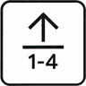
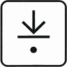

About this manual
With a single page, Pattern+ works like stock Pattern: the same grid, the same 16 steps, the same encoders for swing, rotation, section and direction, and the same way of entering notes and starting HOLD. So for everyday playing, Teenage Engineering's guide is the manual: teenage.engineering/guides/op-1/original/sequencers.
This manual covers what Pattern+ adds on top, and the few places where it doesn't yet match stock (see Where it differs from stock).
How to read the controls
The OP-1 has four encoders. This manual calls them by colour, left to right: blue, green, white and orange.
- Turn an encoder to change a value. Push an encoder to press it like a button.
- Press a key, or hold it while you do something else. "Shift + green push" means hold Shift and push green.

,
and are the three tape-edit keys. is the help key.- Text in a black box, such as CUT D, is what the screen shows.
Screens have numbered dots. The list beside the picture says what each number shows. Dot colour matches the encoder that changes that part.
Get started
- Install
patternplus.knlfrom the Hundekraft workshop's Your plugins page. Building it is described in the Pattern+ README. - Press or .
- Hold Shift and press to pick the sequencer type, and choose
PATTERNPLUS. - Press . You are on page A, and everything works as in stock Pattern.
Synth and drum each have their own pages, chain, clipboard, undo and saves.
Pages
A page is one grid: its notes, section, swing and direction. Pages are named A to P. You start with A.
- 1The page letter
- 2The grid and cursor, as in stock
- 3Swing on green. Bright whenever it isn't 50%
- 4The section, on white
- 5The message line
| Control | Does |
|---|---|
| Shift + green push | Next page. On the last page, adds a blank page after it |
| Shift + blue push | Previous page |
HOLD with no chain loops the page on screen, as stock loops its one pattern. A page with no notes plays a bar of silence at its own length.
Chains
A chain plays pages in the order you set, such as A > B > C > C > D. A page can appear more than once; every appearance plays the same grid, so editing B changes every B.
A chain lists positions, not patterns. Cutting and pasting changes what is on a page, never the chain.
Build a chain
Shift + white push steps through the views: grid, chain, saved, then grid again. Playback carries on while you switch.
- 1The underline, moved with blue
- 2The picked page, chosen with green
- 3The entry playing
| Control | Does |
|---|---|
| blue turn, or | Moves the underline along the chain |
| green turn | Picks a page. On an existing entry, changes that entry |
| green push | Adds the picked page at the underline |
| white push | Removes the entry at the underline |
| orange turn | HOLD, as in the grid |
Pages with no notes on them show in red.
Play a chain
- Turning orange right starts the chain from its first entry. An empty chain loops the page on screen.
- The next page starts when the current one finishes its cycle, including its own section and direction.
- The grid follows the playing page. Change page by hand and it stops following: FREE shows under the page letter, and you can edit any page that isn't playing. Shift + orange push, or starting again, follows the chain once more.
- While stopped, moving the cursor past the end of a page's section carries on to the next page in the chain, and past its start back to the previous one, wrapping round. A page that isn't in the chain keeps the cursor to itself.
Stay on one page
Hold to keep the cursor, and HOLD, on the page on screen. With a chain, PAGE shows under the page letter.
- While stopped, the cursor wraps within the page instead of moving along the chain.
- While a chain plays, the playing page repeats for as long as you hold. Let go and the chain carries on from there.
- Hold it as you start HOLD to begin from the page on screen instead of the chain's first entry.
Cut, copy and paste
The tape-edit keys move a page's pattern (its notes, section, swing and direction) between pages. The page itself never moves, so the chain is never touched. They work in the grid view while stopped; otherwise STOP FIRST shows.
| Key | Does |
|---|---|
| Copies this page's pattern. COPIED B | |
| Copies it, then leaves the page blank. CUT B | |
| Pastes onto this page. A blank page takes it straight away; a page with notes asks first | |
| Shift + | Pastes onto a new last page and goes there. FULL when all 16 pages are in use |
The clipboard lasts until you load a save, start over, or turn the OP-1 off.
Undo
While stopped in the grid, Shift + orange push takes back the last cut or paste, up to three. UNDONE, or NOTHING TO UNDO. Undo never changes the chain.
Saving
Automatic
Your pages, chain and selected page save themselves and come back after a power off, stopped. Give it a few seconds after a change before you switch off.
Saved collections
The saved view holds 8 named slots per mode. Each saves every page and the chain. Shift + white push twice from the grid to get there.
- 1The arrow, moved with blue
- 2Green: the slot you last loaded or saved
| Control | Does |
|---|---|
| blue turn, or | Moves the arrow along slots 1 to 8 |
| white push | Saves to this slot, then asks for a name |
| green push | Loads this slot after asking REPLACE WORK?. Stops playback |
| Shift + green push | Starts over after asking CLEAR ALL?: one empty page, no chain. Slots are untouched |
| orange turn | HOLD, as in the grid |
Every question is answered the same way: green push for yes, orange push for no.
Name a save
- Turn blue and green to pick a letter.
- Push white to add it. deletes the last one.
- Push orange to finish. Saving onto a used slot replaces it only now.
- Press a mode key instead to cancel. Nothing is saved.
Where it differs from stock
With one page, Pattern+ should behave exactly like stock Pattern. These are the known exceptions:
- , and cut, copy and paste patterns.
- is the stay-on-one-page key, so stock's help text doesn't show on the Pattern+ screen. Shift + still works.
- Shift + a note key on a step that already has that note erases it.
- While playing, , blue and Shift + blue do nothing until you start live edit. Stock moves a cursor that fights the playhead.
- Live edit (Shift + or while playing) is as stock: the cursor leaves the playhead, so you can move it, add notes and erase while the pattern plays. Shift + orange push, or starting again, puts the cursor back on the playhead. With a chain, the grid also stays on its page and FREE shows.
- The swing, HOLD and page labels use Hundekraft's font, so they look slightly different.
Anything else that doesn't match stock with a single page is a bug.
Limits
- 16 pages per mode, A to P.
- 32 chain entries, one chain per mode.
- 8 saved slots per mode.
- 3 undo steps per mode.
All new controls
In the grid view. Everything not listed works as in stock.
| Control | Does |
|---|---|
| Shift + blue push | Previous page |
| Shift + green push | Next page, or a new blank one after the last |
| Shift + white push | Next view: grid, chain, saved |
| Shift + orange push | Playing: follow the chain again and end live edit. Stopped: undo |
| held | Stay on this page |
| Copy | |
| Cut | |
| Paste here | |
| Shift + | Paste onto a new page |
| green / orange push, when asked | Yes / no |